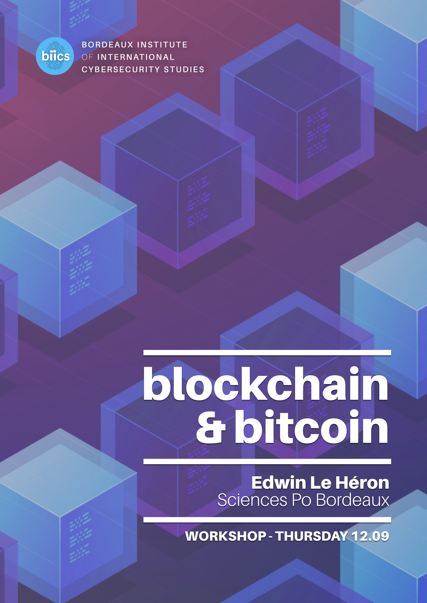
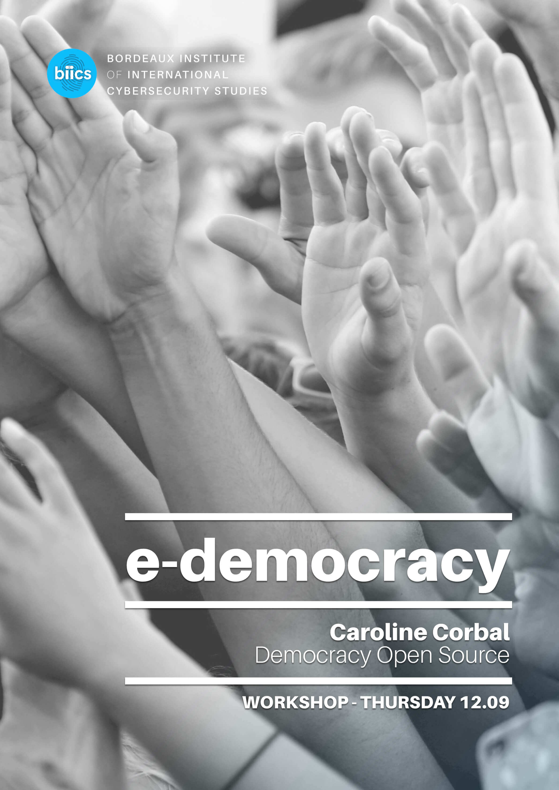
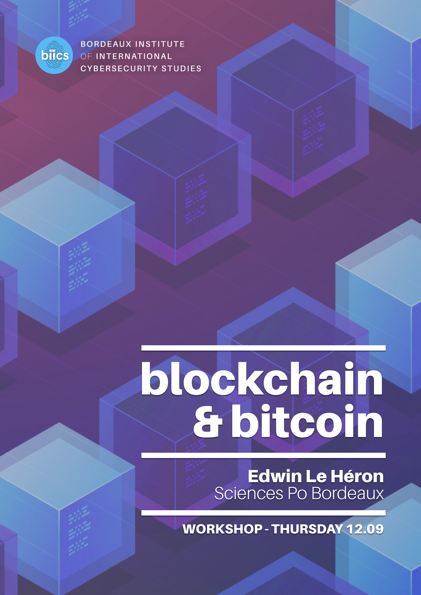
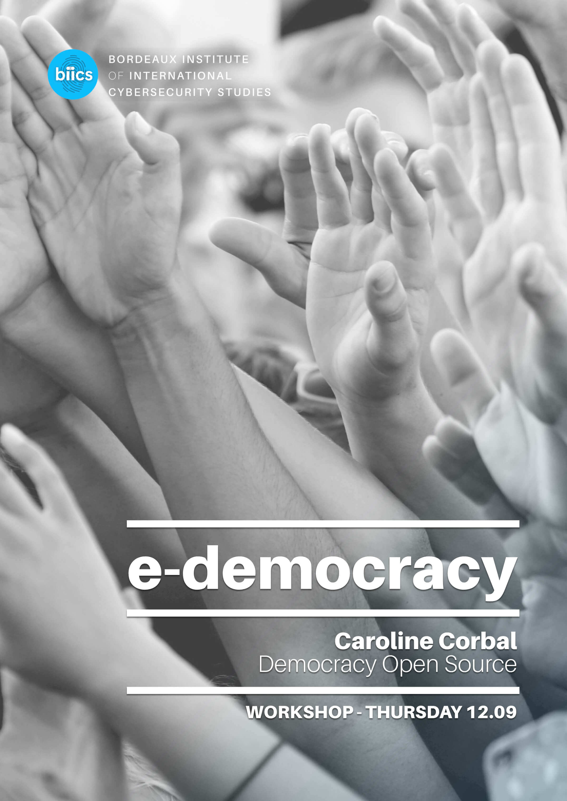
 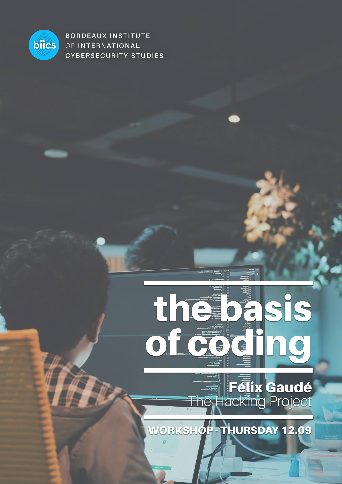
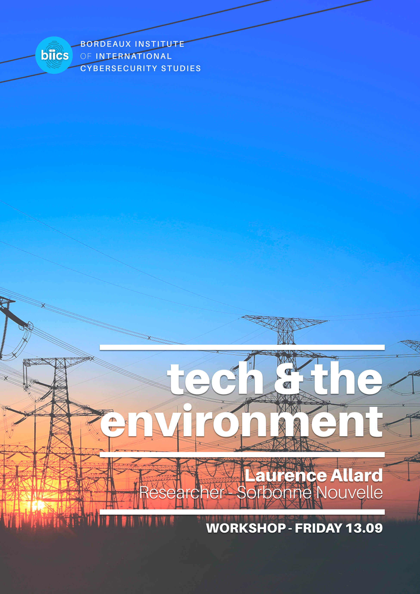
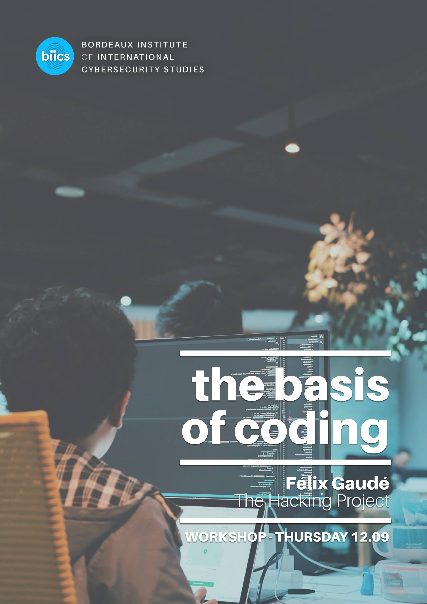
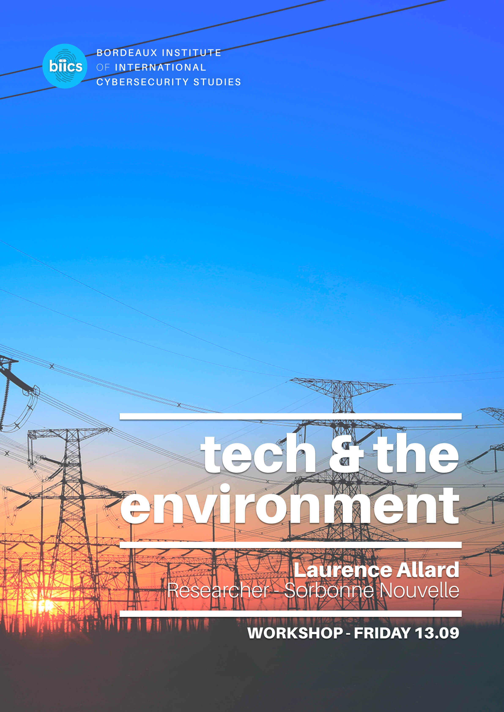


In a time when it is predicted that by 2020 the number of connected devices will reach 21 billion, it cannot be denied that cybersecurity is becoming more and more critical to both individuals and companies.
On the 12th-13th September 2019, we at the Bordeaux Institute of International Cybersecurity Studies (BIICS) will be hosting our first free annual conference; 'Tech Talks: The Politics of Cybersecurity'.
By bringing together cybersecurity experts from a wide range of professions, our conference will provide a platform for both experts and novices to learn about the different streams of tech policy, and the importance of keeping up to date with the political world of cybersecurity.
Co-founded in September 2018 by Margaux Girard and Verity Marsterson, BIICS is a research institute based at Sciences Po Bordeaux.
As a dedicated team of Masters students and tech enthusiasts, our range of expertise stems from the EU tech policy to cyberdefense and the politics of algorithms.
Alongside our studies and work, we conduct weekly meetings, and produce daily online content on our social media to raise awareness of the importance of cybersecurity.
How do we define cybersecurity & why is it so important? (EN & FR)
9h15 - 9h35
Roundtable: Internet Governance in the 21st century: the challenges & opportunities of regulating a cross-border platform (EN)
9h35 - 11h15
COFFEE BREAK
11h15 - 11h45
Roundtable: The future of business: exploring new solutions for a secure workplace (FR)
11h45 - 12h30
LUNCH BREAK
12h30 - 13h30
Keynote Speech (EN)
13h30 - 14h30
Alberto Domingo - NATO SACT
Inaugural conference: New political challenges: innovation & technology beyond the internet (EN)
14h30 - 15h00
Jérôme Freani - Cyberologue
Workshop I: IoT & Connected Cities
15h00 - 15h45
Clotilde Cazamajour - Urban-Law
Workshop II: The Ethics of AI
15h00 - 15h45
Jean François Bonnefon - CNRS
Workshop III: Blockchain & Bitcoin
15h00 - 15h45
Edwin Le Héron - Sciences Po Bordeaux
Workshop IV: The Basis of Coding
15h00 - 15h45
The Hacking Project
Reflections on Workshops (EN & FR)
16h00 - 16h30
Moderated by Jérôme Freani - Cyberologue
COFFEE BREAK
16h30 - 17h00
Keynote speech
17h00 - 17h45
Tristan Nitot - Qwant
Reflections from day 1 (EN & FR)
17h45-18h00
Margaux Girard & Verity Marsterson - BIICS
Digital Inclusion: The Importance of an Accessible and Inclusive Cyberspace (EN)
9h00 - 10h00
Olivier Esper - Google
Roundtable: Cybersecurity & Geopolitics (EN)
10h00 - 11h00
COFFEE BREAK
11h00 - 11h30
Workshop I: Fake news and online propaganda (EN)
11h30 - 12h15
Nicolas Hénin - Radicalisation Awareness Network
Workshop II: Tech war & cybercrime
11h30 - 12h15
Olivier Grall - ANSSI
Workshop III: Are the environmental threats associated to technology enough to unite countries in the fight against climate change? (FR)
11h30 - 12h15
Laurence Allard - l‘Université de Lille 3/Paris 3
Workshop IV: E-democracy (FR)
11h30 - 12h15
Caroline Corbal - Democracy Open Source
Reflections on Workshops (EN)
12h30 - 13h00
Cybersecurity in the EU (FR)
13h00 - 13h30
Laurence Harribey - Sénat
Closing Conference (FR & EN)
13h30 - 13h45
Margaux Girard & Verity Marsterson - BIICS
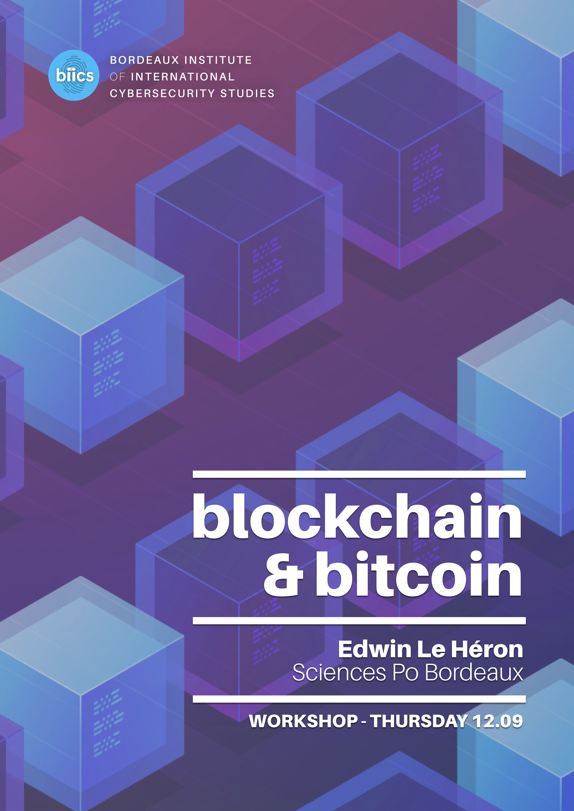
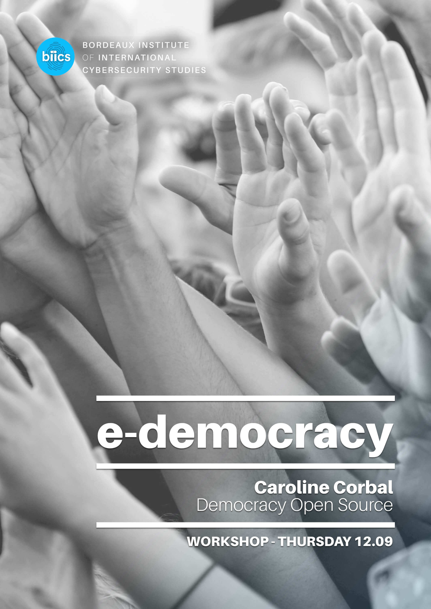
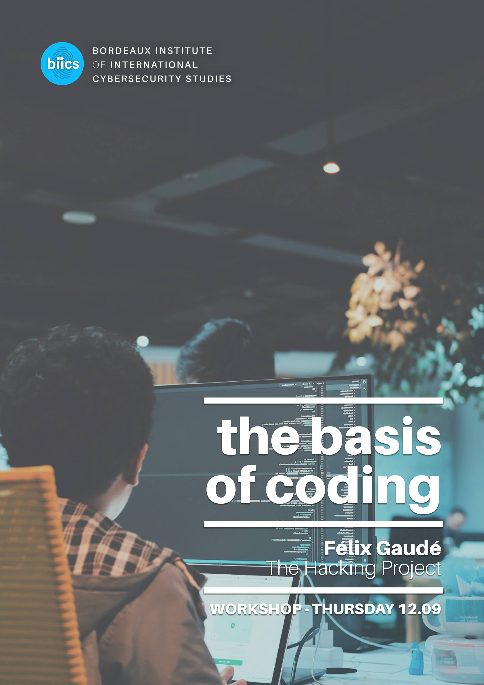
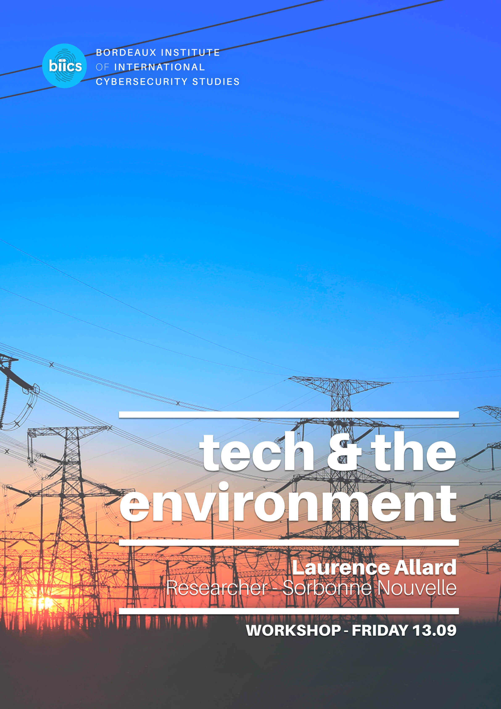

Olivier Esper is a Senior Manager in Public Policy at Google. Prior to this, he has worked as the Manager of Government Affairs at Cisco, as well as a Senior Analyst at the French Embassy. Olivier Esper has also spent 4 years as an Analyst and Chief of the Internet Bureau at the French Communications Commission. He currently holds the position of Secretary in the Association des Fournisseurs d'Accès et de Services (AFA).

Dr Alberto Domingo is now Cyberspace Operations Technical Director for NATO Supreme Allied Headquarter Transformation (SACT) in Norfolk, Virginia. Before moving to the US, he worked for more than 13 years for private engineering and consultancy firms in the areas of telecommunications, space systems and defence, and was assistant professor at ICAI and Alcala universities in Madrid in project management and computer science.

Andrea Beccalli is the Director of the Stakeholder Engagement Team at ICANN where he works on ICANN's political engagement in Europe. Andrea Beccalli has also served as Policy and Advocacy Manager for the IFLA, and an Associate Expert at UNESCO's Knowledge Societies Division, Communication and Information Sector in Paris, where he led negotiations around WSIS and the 2009 agreement between UNESCO and ICANN. Beccalli has also worked for Internews EU on a policy study on Internet and Freedom of Expression in Iraq.

Andrea Calderaro is the Founding Director of the Centre for Internet and Global Politics (tag CIGP if possible), and a Politics & IR Lecturer at Cardiff University. Having worked with a number of key institutions, from the EU Cybersecurity Capacity Building Task Force (DG-DevCo/ISS) to UNESCO’s Internet Universality Program Advisory Board, Internet and International Affairs, his expertise lies in Internet governance, cybersecurity capacity building, telecom policies, digital rights and the role of the EU in the global Internet policy debate.

Tristan Nitot is the Vice-President for Advocacy at French privacy respecting search engine, Qwant, where he focuses on open source and privacy. As a previous member of the data protection authority, CNIL, Chief Product Officer at open source personal cloud platform, Cozy Cloud, and Founder and President of Mozilla Europe, Nitot has been working in technology for over 27 years. He also helped to launch the OpenWeb.eu.org project in 2002, aiming at promoting Web standards and accessibility.

Nicolas Hénin is an independent consultant in counter violent extremism, counter terrorism and disinformation. As a former journalist and war correspondent who won the Bayeux Award of war correspondents 5 times, Nicolas Hénin specialises in international relations and the Middle-East. He covered the events in Egypt, Libya, Yemen and Syria after the Arab spring, and was held as a hostage for 10 months by ISIS in 2013. In 2017, he created Action Resilience, a research center about radicalisation and terrorism.

Fabien Rech is the Senior Director of Southern Europe at McAfee. Prior to this, he spent just under 10 years at his self founded company Netstaff, a global security and networking integrator.
French Senator of the Gironde department since 2017, Laurence Harribey has freuqently engaged in parliamentary discussions around cybersecurity. Devoted to public service, she has served as Mayor of Noaillan and in regional and local councils for over 10 years. In 2017, as the main rapporteur on Cybersecurity in the Committee for European Affairs, she presented a bill to rigorously apply European cybersecurity directives at a national scale. The following April, she published a European parliamentary bill advocating for effective cyber cooperation between the Member States and the European Union Agency for Network and Information Security (ENISA).

Olivier Grall is the Regional Delegate of ANSSI, France’s National Cybersecurity Agency and manages territorial actions to advise and protect local authority or regional economic operators. He worked for seven years as the head of the french branch of MSAB, a leading company providing mobile phone analysis for police forces, and has also worked for Dell during his career.

Meryem Marzouki is a Senior Academic Researcher in Political Sciences at the French National Centre for Scientific Research (CNRS). She runs a multidisciplinary research activity focusing on Internet governance actors, issues, and institutionalization processes, and teaches Internet Regulation and Governance at Sorbonne Université. Details at: https://www-npa.lip6.fr/marzouki/

Laurence Allard is a lecturer in communication sciences at the University of Lille 3 and a researcher at the Sorbonne Nouvelle Paris-3 University. Her main research topics are digital expressive practices, anthropology of data, sensors and other chips, as well as the ecological consequences of the development of technologies.

Holding a PhD in intellectual property, Dr Konstantinos Komaitis is a Senior Director at the Internet Society in charge of strategy and policy development. Over the past years, he has held various leadership roles, including the chair of the Non-Commercial Users Constituency at ICANN and has often provided expert advice on governmental and other fora, having testified before the House of Lords Communications Committee amongst others. For the Internet Society, his main responsibility is thinking strategically and creatively about the future of the Internet, understanding how this links to public policy decision-making and will connect these streams into a coherent policy strategy.

Muneo Kaigo is a Japanese teacher at the Tsukuba University, school of Humanities and Social Sciences. He began his career as the representative of Japan to the Asian Media Information and communication centre in 2008. Since then, his work has mainly focused on contemporary digital topic in Japan such as the influence of information and communication technologies on life and society.

Jean François Bonnefon is Doctor in cognitive psychology at the CNRS and the Toulouse School of Economics. In 2018, he and a group of researchers at the MIT media lab launched the Moral machine, an online website allowing people to choose from different scenarios for how self-driving cars should behave on the streets. More than 2 million people answered, providing about 40 million choices, and the ground for a now famous research article published in Nature entitled, ‘The Moral Machine Experiment’.

Since 2015, Beth Ellis has been conducting research for the Defence Science Technology Laboratory (DSTL), which is part of the UK Ministry of Defence (MOD), specifically contributing to Cyber Vulnerability Investigations (CVIs). She has worked on crisis contingency, search effectiveness and the use of IT by military operators. Supporting this work, she is also studying an MSc in Cyber Security & Human Factors at Bournemouth University where she has conducted research on social engineering including pharming, Domain Name Server (DNS) attacks and the implications of Denial of Service (DoS) attacks.

Clotilde Cazamajour is a smart city specialist, CEO and lawyer at UrbanLaw. Every day, she works to find legal basis for the city of tomorrow. UrbanLaw advises on urban planning law as well as providing legal support for major companies, start-ups and local authorities in the context of ‘Smart Cities and Networks’ programs. Clothilde Cazamajour has also taught law for around 25 years at a number of institutions including the Université Montesquieu Bordeaux.

Edwin Le Heron is professor in economics at Sciences Po Bordeaux. Researcher in Monetary Economics and Financial Economics and post Keynesian theory at the Centre Emile Durkheim, he has developed an interest in cryptocurrencies such as Bitcoin. An active member of the French Association of Political Economy, Edwin Le Heron is also the current president of ADEK, the French-speaking association for Keynesian Studies. He is the author of “What is the use of the ECB?” and the co-author of “Should Central Banks be Independent?”.

François Pellegrini is a professor in informatics at Université de Bordeaux and a senior researcher at LaBRI and Inria Bordeaux. He is a commissioner at CNIL, the French data protection authority and chairman of Aquinetic, a nonprofit regional association that promote open and free innovation in Region Nouvelle-Aquitaine.

Entrepreneur and innovator, Caroline Corbal focuses on digital commons for public interest & diversity in tech. Having graduated from our very own Sciences Po Bordeaux, Caroline Corbal is now the President and Founder of Democracy OS France, an online consultation platform, and the VP of the Paris Open Source Summit. She is also a member of the “Open Héroïne” network.

Now Legal Adviser in Cybersecurity and Data Protection Officer at TEHTRIS, a technology firm that specialises in security by design services, Florine Belle developed her legal expertise during her Masters’ in International Public Law, and her experience at the French National Cybersecurity Agency (ANSSI), during which she worked on the Tallinn Manual 2.0 and the legal implications of regulating zero-days vulnerabilities.

Julien Nocetti is a Research Fellow at the French Institute of International Relations (IFRI) since 2009, where he is a specialist on global digital and cyber issues. His latest publications deal with the geopolitics of cyber conflict, China’s assertiveness in artificial intelligence, and Europe’s digital and data policies. Julien Nocetti is also a Russia expert, in particular Russian foreign and domestic Internet policies. He holds a PhD in Political Science from the National Institute for Oriental Languages (INALCO).

We will also be joined by a member of The_Hacking_Project (tbc). Founded in 2017 by Félix Gaudé and Charles Dacquay, The_Hacking_Project is a platform that sets out to recreate the bonds between humans by changing the world of education. In order to do this, they offer coding lessons in peer learning that are open to all.

Yves Déloye is a political scientist and sociologist. He has been the headmaster of Sciences Po Bordeaux since 2016, and is dedicated to provide a critical thinking-based education to his students, as well as a motivational environment to thrive. He has also been the publishing director of the French Journal of Political Science as well as the Secretary of the French Association for Political science for the past 15 years.
Throughout the conference, a number of representatives from the BIICS team will take to the stage. Within this team, we have a variety of different skills and interests, including one member who has studied in California, one who is from Turkey, one who worked in Brussels and one who is the President of Science Po Bordeaux's Ausone Conseil. Come and talk to us to find out more about the different walks of lives that make up our fun and exciting team...

Julia Slupska is a doctoral student at the Centre for Doctoral Training in Cybersecurity at the Oxford Internet Institute. Her research focuses on the ethical implications of conceptual models of cybersecurity. Currently, she is studying cybersecurity in the context of intimate partner violence and the use of simulations in political decision-making. Previously, she completed her MSc in Social Science of the Internet on the role of metaphors in international cybersecurity policy. Before joining the OII, Julia worked on an LSE Law project on comparative regional integration and coordinated course on Economics in Foreign Policy for the Foreign and Commonwealth Office.

As Founder and CEO of CyberCercle, Bénédicte Pilliet specialises in defence and national security. Alongside running her cybersecurity platform, Bénédicte Pilliet is a lecturer in public policy in the field of cybersecurity and international relations at the University of Toulouse Capitole 1. She is also the Director of the Digital Security Certificate at the Paris-Dauphine University. A graduate from Sciences Po Paris, she is a Lieutenant-colonel for the army’s reserve of citizens and a member of the citizens’ reserve of cyber-defence.

Marine Maître is a Cybersecurity & Digital Trust consultant at Wavestone, the first independent consulting firm in France, specialised in digital transformation. Marine Maître is graduated from Sciences Po Bordeaux and from a professional master in La Sorbonne in Global Risk & Crisis Management. After having spent a year in Argentina working for the French Institute, Marine worked a year in EDF crisis management team before starting a career as a cybersecurity & risk management consultant at Wavestone.

Jérome Freani is a cybersecurity risk management and governance consultant at CGI business, while being the Head of the Club Cyber at the Economic Warfare School of Paris and running Cyberologue, an online platform dedicated to tech-related news. He has gained his expertise through an MBA in Strategy and Competitive Intelligence, as well as working for multiple firms such as Airbus and setting up his own tech businesses.

Join us on 12-13th September at:
Sciences Po Bordeaux,
11 Allée Ausone,
33600 Pessac,
Bordeaux
France
 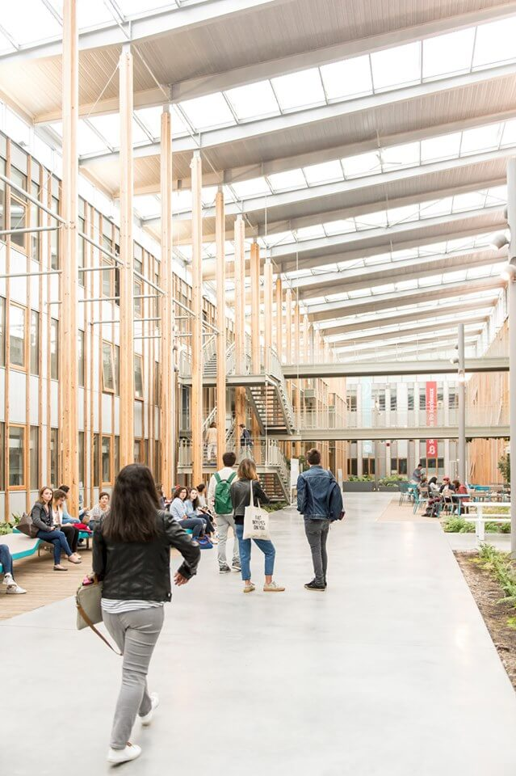
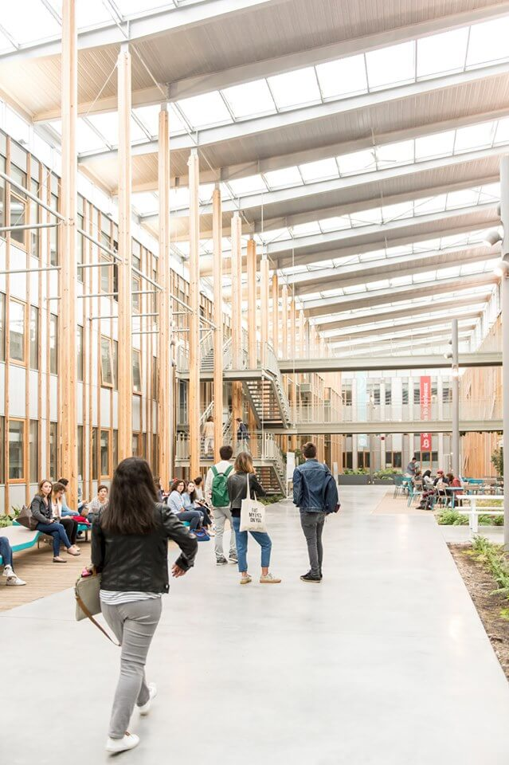